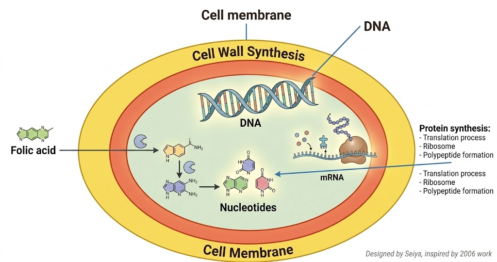
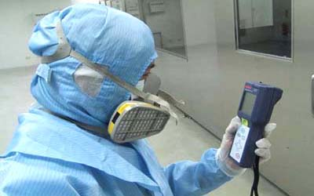

微生物細菌消毒
自古以來人類就了解許多抗菌防腐的知識,從四千多年前古埃及的木乃伊,到日常使用糖.鹽巴.或用燻蒸法來保持食物的儲存期,或使用酒處理傷口,以及中國古代使用的備長炭或竹炭(經日本研究發揚光大),在英國外科醫生李斯特石碳酸消毒空氣及物品,更開啟了消毒技術,以上種種都是 抑制微生物生長的方法.而我們一般人認為消毒就是將微生物殺死,其實不盡然是如此,因為消毒在微生物學(microbiology)上,可是區分多種等級,並且有嚴格的規定.廣義的消毒則是指使用物理或化學方法將微生物抑制或殺死外環境中及機體體表的微生物.以防止微生物散播或傳染的手段,年來許生物工程或食品加工標榜產品於無菌室作業,基本上並不是真正無菌室,而是低菌室.真正之無菌室其維護費是非常昂貴的.

細菌消毒總類
第一級滅菌(Sterilzation):
適用於無菌處理,如手術刀.並且包含了細菌芽胞完全死滅
殺菌(Pasteurization):
它是指能對細菌之繁殖殺死,但不一定能夠將芽胞殺死,它通常用於院內感染清潔消毒及食品消毒.99.999%空氣淨化器都無法達到此標準,因此是不得使用此字
除菌(Removal of microorganism):
從字面上很容易了解,此法是將微生物移除掉,但不代表微生物 完全死滅.百分之99.9%以 空氣清淨機,在廣告用詞中最高及只能達到此標準
靜菌(Microbiostasis):
微生物控制停止增長,至少成為穩定狀況
防腐(Preservation):
抑制細菌生長,而細菌通常是不死亡的.最常使用於食物保存
微生物存活要件
微生物細菌病毒等都需要營養源才能再生繁殖,包含有機物及無機鹽類,其環境有些還需有氧氣.溫度.PH值及滲透壓等因子

細菌病毒消毒藥劑
微生物包含細菌.無細胞生物(如病毒.亞病毒因子).真核微生物(如真菌.原蟲.藻類)三大類,因此使用消毒劑必需了解所消毒目標,才能對症下藥,以病毒來說,我們熟知腸病毒諾羅病毒是無法用酒精殺死的(因為有層無脂質蛋白質膜),但2019新冠狀病毒(COVID-19)Coronavirus,(最早期稱武漢肺炎),卻是可用酒精殺死的.
當了解要消毒物,就可選擇消毒劑,但是消毒劑要正確使用,而非亂噴,以次氯酸水類的,不可將它用霧化機使用在有人之場所,以本公司處理多項案例,最常見就是許多做月子中心,其嬰兒室不明原因上呼吸道發炎,在我司勘查後,發現就是不當使用霧化氣消毒造成原本呼吸道的好菌也給殺掉,造成此問題,
許多消毒藥劑標榜殺病菌99.99%,以業者來說,他們可以提供SGS.TUV...等等第三方報告,但以法規來說它不能夠寫上殺菌字義,原因在於實驗室的實驗方法是可控(溫度.濕度.劑量.時間.菌量.PH值.有機物...等等),而現實外在變數太多是不可控,因此必需絕對嚴謹,以我們經驗也認可政府單位使用此嚴謹做法,必免誇大不實廣告

防疫基本觀念
微生物是無所不在,並非所有微生物對人體都有害,因此在消毒時,通常是針對人,事,物,場所.等判別,施作微生物消毒,通常有特定對象與場所,因此使用之消毒方法會取決於現場,消毒劑有許多是有強烈劇毒的,且有殘留效果,不能亂使用,
消毒本身應該是針對微生物而不是真對人類.此觀念應該是最基本認知,微生物消毒有分，(降低感染性)及(持續性消毒)及(傳統一次性),使用消毒藥劑,需正確合理使用,以上
自我防護,包含在有疫情流行時,避免在密閉空間,如電梯有人潮,適當在有人潮處.及醫院正確穿脫戴口罩,(在一院使用過之口罩當離開院區,需將其丟棄),以及正確常洗手才是最優做法,因為接觸傳染往往是我們所忽視,我們的手一天會接觸數百至數千物品,而手語臉部.口鼻等接觸也達百次,因此洗手就相當重要
2019倫敦發明展台灣唯一雙金獎
 <
/div>
<
/div>
為何選擇世屋消毒
1. 具有40多年實戰經驗,使用物理.化學等方法,從防治.降低感染.至消毒等多重工法
2.唯一具有研發能力,且具有多項國際獎項之消毒公司
3.專業的團隊是品質之保障,並可客制化